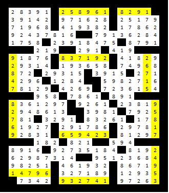

First, solve the cross differences puzzle according to the directions. The result is:

The entries clued by a ‘?‘ are as follows:
258961 = 1 -> A 8291 = 14 -> N 92847 = 18 -> R 837192 = 18 -> R 26715 = 7 -> G 82769 = 16 -> P 659423 = 5 -> E 95817 = 18 -> R 14796 = 1 -> A 932741 = 4 -> D 24953 = 5 -> E
The letters indexed by the number anagram uniquely into one word, the answer: PREARRANGED.